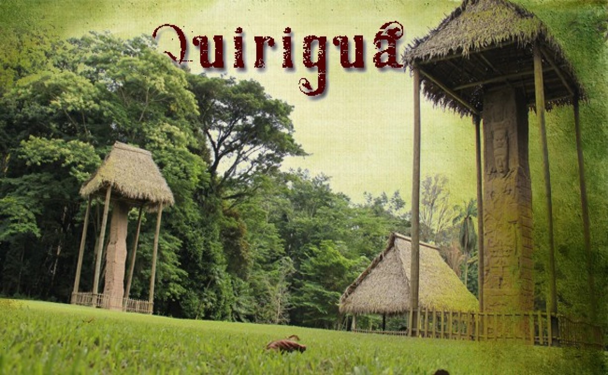

Quiriguá es un importante sitio arqueológico maya ubicado en el oriente de Guatemala. Es conocido por sus imponentes estelas talladas, las más altas del mundo maya, y por su valor histórico y artístico.
El sitio fue declarado Patrimonio de la Humanidad por la UNESCO en 1981 debido a la calidad de su arte escultórico y a su importancia en la historia maya.
Ubicación: Departamento de Izabal, municipio de Los Amates.
Actividades: Recorrer el parque arqueológico, observar las estelas y altares, aprender sobre la historia del sitio y disfrutar de la naturaleza que lo rodea.
